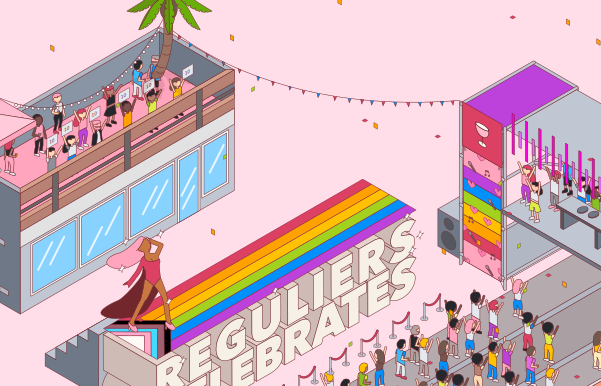

Introduction
There's a festival on the way at the iconic Reguliersdwarsstraat in Amsterdam, and nerdànerd contacted me to create an illustration that could be used for various promotional materials. The festival's name is 'Reguliers Celebrates', and consist of multiple activities, including a 'rainbow runway' drag queen show and activities around the European Songfestival.
During this project, I worked closely together with Alexander van Keulen, who was responsible for the art direction and concept development.
The design challenge
The challenge was to create an illustration that was built up from multiple smaller illustrations that could each be used in different combinations for different graphics. This meant that the Adobe Illustrator file had to be very 'clean' and organised, so the handoff would go smoothly.
The process
As I started working on this commission, the focus was on delivering a concept quickly. My work partner for this job, Alexander van Keulen, already had created a concept: an isometric illustration of the Reguliersdwarsstraat.
We both collected inspiration for this project, and he went through several ideas and inspirational pieces with the client. After determining what kind of angle the client liked, I started sketching in procreate.
The first sketches were very rough, but were effective for receiving feedback. As this project had to be done within a short period of time, it wouldn't be productive to dwell on the perfect neatness of the sketches. After receiving adequate feedback, I started implementing everything in Illustrator, which lead to the following end result.
The end result
With this illustration, I tried to convey the feeling of the fun, inclusive and upbeat Reguliersdwarsstraat festival.

The illustration also includes a logo design for the festivities, which is shown below:
If you're curious about how the client has implemented the illustrations, or if you want more information about the event (or tickets!), please have a look at the festival website.
What I learned
This project really taught me how important it is to make a good estimation of how much time the work will take. This illustration style wasn't one that I was used to, even though isometric illustration luckily wasn't completely new to me. This made it difficult to estimate the time it would take accurately, especially since the client wanted to receive the illustrations as quickly as possible. This project taught me; if you don't know how long it'll take, assume that it'll be more hours rather than less.
I also learned more about isometric illustration itself, and found some useful resources. Illustration 'actions' were new to me as well, but I learned to use these to make the process quicker. This project definitely tested my technical skills, which was a lot of fun!
In the end, I'm quite proud of how this project turned out, and it's been really fun seeing how the illustrations are used for the promotional materials right now. I hope they will help attract lots of party people to the festival! :)
Tools
I used Procreate and Adobe Illustrator during this project.